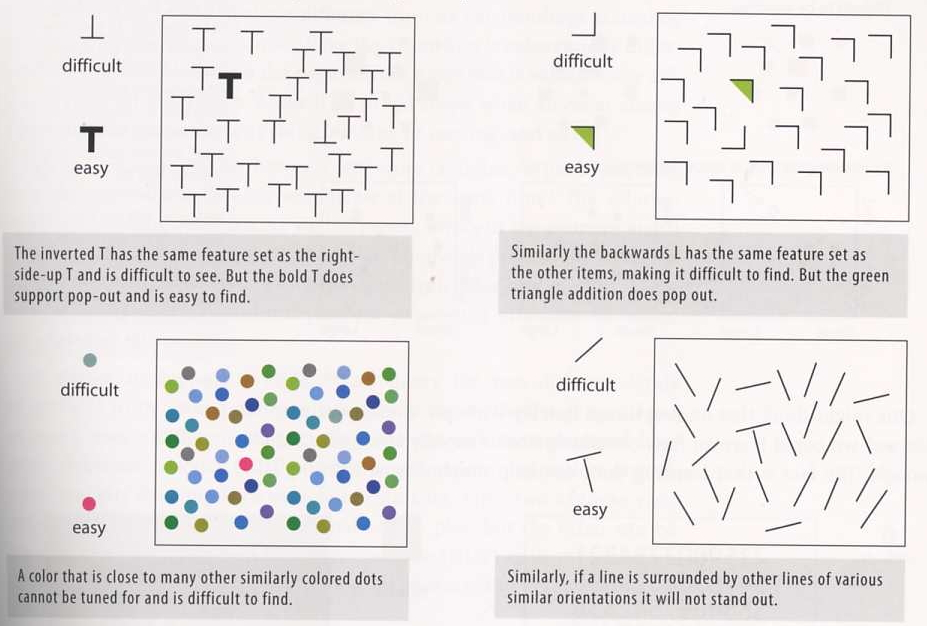
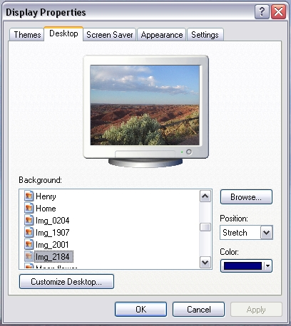
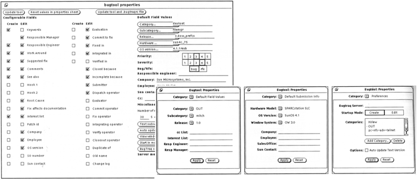

Organization
& Visual Structure
(material from:
Designing Visual Interfaces by Mullet and Sano and
Designing the User Interface by Schneiderman and Plaisant)
but first,
another look at colour blindness
http://members.shaw.ca/hidden-talents/vision/color/colorblind1.html
Lets see what
happens if we look at the Project 1 group solutions as someone who
is colour blind (Deuteranope.) The colour blind version is on the
left and the original images are on the right.
http://www.vischeck.com/vischeck/
And some more
about colour:
- Use
colour conservatively
- Limit
the number of colours
- Colour
can speed recognition, or hinder it depending on what is
coloured and how its coloured. Colour must support the task(s)
- Colour
can help in grouping related items
- Colour
can help in dense information displays
- Colour
coding should appear with minimal user effort and be under the
user's control
- Design
for monochrome first
- Keep in
mind that 5% of the population is colour blind (8% of men and
1% of women)
- Be
consistent
- Think
about what certain colours commonly mean / represent
- Be
careful what colours are used together (eg bright red on
bright blue is really annoying)
- Use
colour to indicate a change in status



"The eye travels
along the paths cut out for it in the work" Paul Klee
not naturally
occurring in man-made artifacts - need to establish relationships
among components
Benefits of
structure
- Unity - tie
elements together so they work towards a common goal
- Integrity -
keep the design focused on the goal
- Readability -
divide display into manageable subsets
- Control -
allow user to predict areas of interest in the display and eases
navigation
Gestalt
Principles - 1920s
how
individual elements are grouped into gestalts (wholes) during
visual perception
- Proximity -
tend to associate elements more strongly with those nearby
compared to those further away - what do you see in fig 97a?
- Similarity -
tend to associate elements more strongly with those that share
basic visual characteristics compared to those that differ in
those characteristics
- Continuity -
prefer continuous unbroken contours with the simplest physical
explanation - fig 97c (2 crossing lines, 4 segments, 2 right
angles?)
- Closure -
tend to interpret visual stimuli as complete closed figures even
when some information is absent - fig 98a
- Area -
smaller of two overlapping areas will tend to be viewed as the
figure while the larger is interpreted as ground - fig 98b is
the smaller square in front, or a hole?
- Symmetry -
tend to group based on overall form rather than constituent
parts - fig 98c
Principles:
Group related
elements together establishing a hierarchy of elements and groups,
then structure the display to reflect the relationships between
the elements while maintaining balance.
- Grouping -
words in a book grouped into sentences, paragraphs, sections,
chapters. Use groups to create manageable units. Higher level
structures allow the user to orient himself/herself and help
establish a plan for going into the details. Bind functional
units tightly together and distinguish them from the surrounding
controls. (fig 103)
- Hierarchy -
hierarchy should be made obvious through the visual structures
- Relationship
- position, size and value provide the most effective visual
cues to reinforce relationships (which in turn reinforces
groups). Meaning can be implied by location relative to other
elements removing the need for explicit labelling
- Balance -
equal 'weight' of design elements on either side

And how about
saving a file. The old windows way looked like this:
So how does
something like this look today? Here the visual hierarchy better
matches their relationships, and the 'Save' button is moved next
to the file that is being saved.
Common Errors:
Haphazard layout
- should establish spatial relationships to organize the elements
of the design. The image on the left is very chaotic making it
hard to see the relationships. The image on the right is much
better organized, making the relationships clear.

Ambiguous
Internal Relationships: consistency in the alignment of the boxes,
but not in their contents, and several things are 'almost aligned'
- enough to be distracting but not enough to be immediately
obvious (Name vs Delay, Slow)
How are these
things set in a more recent version of windows?


Conflicting
Symmetries:
Here the
boundaries but not the contents are symetrical, the eye is drawn
to the boundaries not the contents. This is also an example of
excessive contrast with the excessive number of boxes, and other
issues in aligning the contents of the boxes.
Aligning Labels
but not controls:
Alignment
within, but not across controls. Things start out ok at the top
and then completely self-destruct in the lower half of the
dialogue box

False structure
- adding boxes to impose structure adds visual noise and excessive
hierachies of 1.
Excessive
display density - the larger (75% of the screen with a small font)
was replaced by the 3 smaller more focused dialogue boxes

Techniques:
- Using symmetry to ensure balance
- Using alignment to establish visual relationships
- Optical adjustment for human vision
- Shaping the display with negative space
Symmetry:
- Identify the axis along which symmetry will be established. In
visual interface design this decision usually boils down to
whether horizontal and/or vertical symmetry.
- Symmetry about the vertical axis is more prevalent in human
perception and is generally more useful in visual displays
- Center the information on the axis of symmetry by carefully
balancing the amount of information on each side of the axis.
The information need not form a literal mirror image provided
the mass and extent are equalized.
- Make sure the axis of symmetry is itself centered within the
overall display context (i.e. the window or icon in question)
- Use the squint test to verify the results
Alignment:
- Identify the major boundaries in the existing layout, and look
for ways to enhance them by moving additional elements into
alignment with them
- Look for elements and margins - both internal and external -
that almost, but not quite, align with one another and bring
them into alignment by altering the size or position of one or
both elements
- Look for free-standing elements and make sure they are aligned
with something else in the display - either a major margin or
some other element to which they are related
- If an element cannot be related to anything else in the
display, try to relate it to the proportions of the display
itself by positioning the element to correspond to the regular
division of the space
Optical
Adjustment:
- Determine the true point of alignment. Translate this into the
'normal' margin that would be occupied by a rectangular element
in the same position
- Extend elements beyond the margin according to the sharpness
of their adjacent angle. The greater the acuteness of the angle,
the farther it will need to extend beyond the 'normal' margin
- Use a 'close-up' version of the squint test to verify
alignment
For more
information on typography you may want to check out 'helvetica' a
documentary by Gary Hustwit.
Negative Space:
- Determine the organization of the information into a
prioritized set of chunks of manageable size.
- Ensure spatial separation of independent units of information
by adding extra white space between chunks. Extra space is
needed even if explicit boundary delimiters are used!
- Determine which elements require additional visual emphasis
- Increase the white space surrounding crucial elements
- Always remember that white space is not wasted space!
Its role is to direct the viewer's attention to adjacent regions
containing critical information.
Lets also take a
look at the interfaces for some devices with particular purposes,
rather than general PC interfaces.
In particular
its important to note that there are no [X] close boxes or other
standards of the desktop computer interface, but the rules about
layouts and white space, icons, and feedback all apply.
YouTube video on
the Kindle Fire interface:
http://www.youtube.com/watch?v=6E1STyzjSTQ&feature=related
PS3's XMB
http://www.youtube.com/watch?v=hCPOob3Bya4
a Garmin and a
TomTom GPS.
garmin YouTube
interface video:
http://www.youtube.com/watch?v=sZjiI1LbfHA&feature=related
apple TV
http://www.youtube.com/watch?v=SyFMBy7I4i8&feature=related
Microsoft's
Metro style
http://www.youtube.com/watch?v=p92QfWOw88I
last updated 2/21/2012